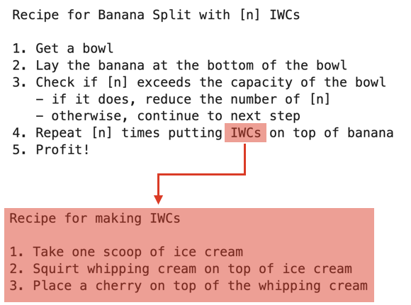
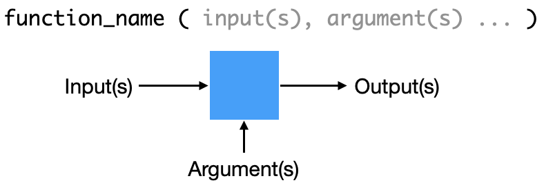
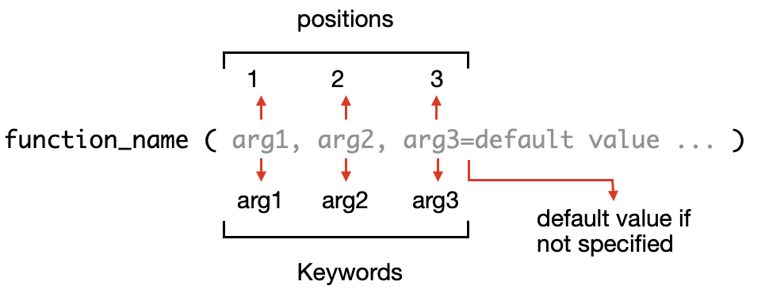
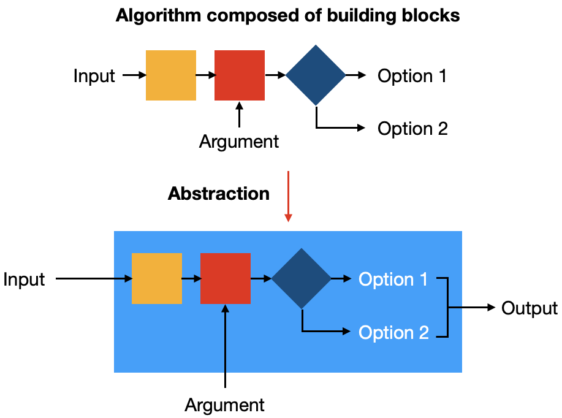
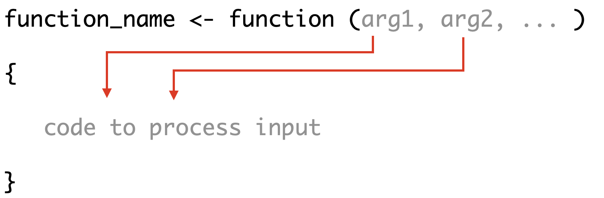
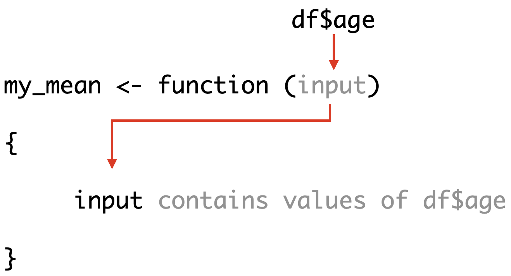
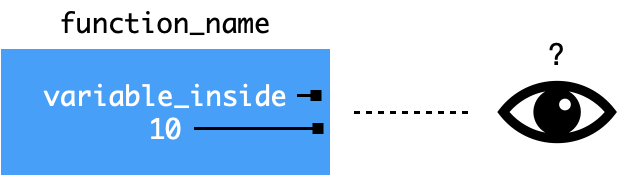
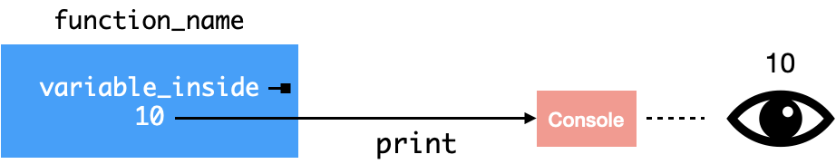
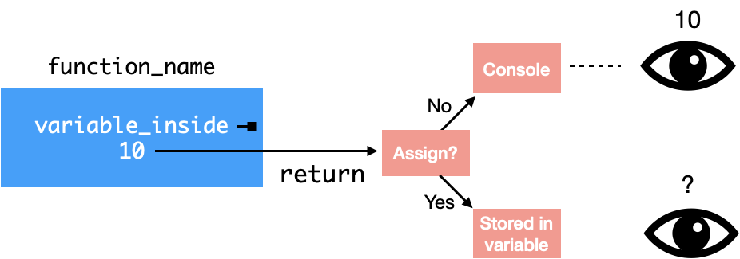

Functions#
Using the recipe as an analogy, we can see that the main recipe contains a reference to IWC, which is a shorthand for another recipe for making the ice-cream, whipped cream, cherry (IWC) portions

Functions are like recipes that are referred to by a label. They allow us to hide away details and focus on the main steps in a program.
Data preparation#
To illustrate the use of functions, we will use the example data frame with patient data
df <- data.frame(id=c(20201,20205,20212,20213,20216),
age=c(19,45, 23, 55, 65),
name=c("Alice","Bob","Charlie","David", "Eliza"),
risk=c("low", "med", "high", "high", "med"))
df$risk <- factor(df$risk, levels=c("low","med","high"), ordered=TRUE)
df
| id | age | name | risk |
|---|---|---|---|
| <dbl> | <dbl> | <chr> | <ord> |
| 20201 | 19 | Alice | low |
| 20205 | 45 | Bob | med |
| 20212 | 23 | Charlie | high |
| 20213 | 55 | David | high |
| 20216 | 65 | Eliza | med |
Overview of functions#
Functions are a method for abstracting a block of code by giving it a name and assigning it to a variable. We have used a number of them already and we will explore them in greater detail
A function may take inputs(s) to be processed, argument(s) that can modify the behavior of the code within the function, and return output(s)

Using built-in functions#
R has several built-in functions that are loaded in the environment. To see documentation for a function, we prepend ? to a function name
Let us look at the documentation for the summary function that provides summary statistics for input data
# built-in help
?summary
Function arguments#
A function may take arguments that can include input data and modifiers. The arguments can be referred to using positions and keywords

We can take a look at the built-in summary function to illustrate the use of positional and keyword arguments
For summary, the order of arguments from the documentation
object: data inputmaxsum: maximum number of levels to show (default =7)digits: number of digits to show (default=3)
Let us use this function to summarize our data in df
df
| id | age | name | risk |
|---|---|---|---|
| <dbl> | <dbl> | <chr> | <ord> |
| 20201 | 19 | Alice | low |
| 20205 | 45 | Bob | med |
| 20212 | 23 | Charlie | high |
| 20213 | 55 | David | high |
| 20216 | 65 | Eliza | med |
The summary function takes in the data as an object as its first argument. If we do not include any other additional arguments, the default values for maxsum and digits are used
summary(df) # uses default maxsum=7 and digits=3
id age name risk
Min. :20201 Min. :19.0 Length:5 low :1
1st Qu.:20205 1st Qu.:23.0 Class :character med :2
Median :20212 Median :45.0 Mode :character high:2
Mean :20209 Mean :41.4
3rd Qu.:20213 3rd Qu.:55.0
Max. :20216 Max. :65.0
If we wish to override the default value, we can specify the value we want. Here, we want to reduce the output to 2 digits of precision and we include the digits=2 keyword argument
summary(df, digits=2) # override the default of 3 digits precision
id age name risk
Min. :20201 Min. :19 Length:5 low :1
1st Qu.:20205 1st Qu.:23 Class :character med :2
Median :20212 Median :45 Mode :character high:2
Mean :20209 Mean :41
3rd Qu.:20213 3rd Qu.:55
Max. :20216 Max. :65
We can also omit the keyword, the function will use values in arguments according to their position. Recall that summary takes in arguments in this order
object: data inputmaxsum: maximum number of levels to show (default=7)digits: number of digits to show (default=3)
Previously, we used the keyword digits=2 argument to reduce the precision of the output.
If we omit the keyword and just put the value in the 2nd position, this will be interpreted as a positional argument (i.e.
maxsuminstead of the intendeddigitsoption)
summary(df, 2) # if no keyword specified, argument uses the position (2 = maxsum)
id age name risk
Min. :20201 Min. :19.0 Length:5 med :2
1st Qu.:20205 1st Qu.:23.0 Class :character (Other):3
Median :20212 Median :45.0 Mode :character
Mean :20209 Mean :41.4
3rd Qu.:20213 3rd Qu.:55.0
Max. :20216 Max. :65.0
If we want to specify arguments without keywords, we will need to include all the arguments in the proper order
Here, if we want to specify the
digitsargument (3rd position), we will need to include arguments in position 1 and 2 in the proper order
summary(df, 7, 2) # if no keywords specified, argument uses the position (2 = maxsum, 3 = digits)
id age name risk
Min. :20201 Min. :19 Length:5 low :1
1st Qu.:20205 1st Qu.:23 Class :character med :2
Median :20212 Median :45 Mode :character high:2
Mean :20209 Mean :41
3rd Qu.:20213 3rd Qu.:55
Max. :20216 Max. :65
If we specify the keywords for the arguments, they will override the positions
summary(df, digits=2, maxsum=7) # when keywords are specified, the override the positions
id age name risk
Min. :20201 Min. :19 Length:5 low :1
1st Qu.:20205 1st Qu.:23 Class :character med :2
Median :20212 Median :45 Mode :character high:2
Mean :20209 Mean :41
3rd Qu.:20213 3rd Qu.:55
Max. :20216 Max. :65
Recommendation
Prefer keyword arguments (unless only few arguments)
Try not to mix keyword and positional arguments
Defining own functions to abstract away details of code#
We can use functions to abstract away the details of our code and giving it a name. Because it abstracts away the implementation details, we are able to think about problem solving at a higher level
For instance, the mean function hides away the details of the code that calculates the average values. We can treat it as a building block for thinking about how it can be used in the larger context of a problem

A function is defined using function() and assigning it to a variable
Inputs/arguments are specified as parameters of
function()The inputs/arguments are used as variables in the function
the
{}block defines the code that will be executed when the function is called

As an example, we will define our own function to calculate the mean of input data and assign it to the variable my_mean
The argument
inputis used as an variable to store the inputThe average value is computed and stored in the variable
meanthe result in
meanis returned usingreturn()
# defining own function using other functions
my_mean <- function(input) { # argument position=1 or keyword=data
mean <- sum(input)/length(input) # variable is defined inside function
return(mean)
}
We can inspect the code we wrote for the function by looking at the variable my_mean
# inspecting the underlying code by omitting the ()
my_mean
function (input)
{
mean <- sum(input)/length(input)
return(mean)
}We can use our new my_mean function to compute the mean of age column in our data frame df. Recall that we can extract the vector of data from the data frame using the $ selector
df$age
- 19
- 45
- 23
- 55
- 65
We can use this as input to our my_mean function to compute the mean. We can choose to refer to the argument by position or keyword
my_mean(df$age) # position 1
my_mean(input = df$age) # keyword
Note that when df$age is specified as the input argument in the function, the data is assigned to the argument variable input.
Once the input is assigned to the internal variable
input, it can be used and referenced within the function

Scope of variables in functions#
Functions hide away details of the implementation within the function blocks {}. These blocks affect the access (or scope) of the variables from inside and outside the function. Knowing this will help us avoid confusion about variables that may overlap
1. Scope of variables inside the function#
When we write a function, let us consider what happens to variables inside the function block {}
Having the same variable names inside the function may inadvertently interfere with the same variables outside the function.
For this reason, variables inside the function block
{}are separate from variables outside the function.

Variables inside a function are local and are not visible outside the function block
We can illustrate this using a simple function that defines a variable variable_inside within the function block {}
function_name <- function() {
variable_inside <- 10
}
When we run the function, we do not see any output as we did not return any value
function_name()
We can try to inspect variable_inside that was defined inside the function
variable_inside
Error in eval(expr, envir, enclos): object 'variable_inside' not found
Traceback:
We can see that variable_inside that was defined inside the function block is not visible outside the function.
We can obtain the values from inside the function by using
printto inspect the values of variable inside the functionreturnto return or export the values outside the function
1.1. Using print to inspect variables inside a function#
The contents of a variable can be inspected by using the print function

print transfers the contents of the variable to the console which is the output that we seen on the screen
function_name <- function() {
variable_inside <- 10
print(variable_inside)
}
function_name()
[1] 10
1.2. Using return to export results from function#

The result can be returned using the return function
If it is not assigned to a variable, it will be printed out on the console
If it is assigned to a variable, the result will be stored and not printed out
function_name <- function() {
variable_inside <- 10
return(variable_inside)
}
function_name()
variable_inside
Error in eval(expr, envir, enclos): object 'variable_inside' not found
Traceback:
save_result <- function_name()
save_result
2. Scope of variables outside the function#
Variables outside the function can be accessed from inside of a function. These are known as global variables and they can be a source of errors when writing functions
Within a function block {}, variables are accessed in the following order:
local variables (defined locally or specified in arguments)
global variables (defined outside the function)
Let us consider a function which prints the variable data
As the the
variableis not defined either as an input argument or a local variable, the function looks for the variable outside the function block{}
function_global <- function() {
print(data)
}
We can define the vector data and run the function
data <- c(10,20,30,40,50)
function_global()
[1] 10 20 30 40 50
As you can see, the function prints out the contents of the variable data as it is a global variable outside the function and it is accessible within the function
This can be source of errors if we inadvertently use a global variable inside the function
Let us look at an example where referencing a global variable by mistake inside a function can lead to unintended results
We define a function to calculate the mean of
inputas before.However, in this case, we mistakenly reference a global variable
data2in the function
function_error <- function(input) {
mean <- sum(input)/length(data2) # data2 is not defined locally
return(mean)
}
We will create 2 different vectors of numbers data and data2. These variables are global as they exist outside of any functions
data <- c(10,20,30,40,50)
data2 <- c(10,20,30,40,50,60,70,80,90,100)
We calculate the mean of data by specifying it as the argument to our function function_error
function_error(data)
Notice that no error was reported but the result is incorrect (it should be 30). This is because we inadvertently referenced the global variable data2 in our function
datawas correctly specified as theinputthe
sumof theinput= 10+20+30+40+50 = 150the
lengthwas computed from the global variabledata2= 10the final
meanwas incorrectly computed as 150/10 = 15
Recommendations for variables when writing functions#
As we have seen, the scope of the variables matters when writing functions. As a guide:
All inputs and arguments that are used in code of a function should be explicitly specified in the function definition
function(argument_1, argument_2, ...)Do not use global variables as inputs for a function
Check that every variable used within the function is defined either locally or specified as an argument
Use the
return()function to export output from a function
Using concepts to develop a function#
We will revisit the earlier example where we used conditional statements to decide whether a patient should be admitted or not
# iterating through the cases by id
pt_ids <- df$id
for (pt_id in pt_ids) {
person <- df[df$id == pt_id,]
if (person$age >50 | person$risk=="high") {
print("admit")
} else {
print("review later")
}
}
[1] "review later"
[1] "review later"
[1] "admit"
[1] "admit"
[1] "admit"
We will wrap the code within a function that we call decide, which allows us to abstract away the details and generalize it beyond the df variable in the original code
This function takes a dataframe as an argument
input_dfReferences to a specific data frame
dfin our original code are replaced with the local argument variableinput_dfThis allows the function accept other inputs besides
dfby specifying the name of the data frame in the argument
decide <- function(input_df) {
pt_ids <- input_df$id # we reference dataframe specified in the input_df variable
for (pt_id in pt_ids) {
person <- input_df[input_df$id == pt_id,] # we reference dataframe specified in the input_df variable
if (person$age >50 | person$risk=="high") {
print("admit")
} else {
print("review later")
}
}
}
decide(df)
[1] "review later"
[1] "review later"
[1] "admit"
[1] "admit"
[1] "admit"
The output looks good, and we have abstracted away the code into a function that can be reused
We can try to save the results by assigning it to a variable result for further processing
result <- decide(df)
[1] "review later"
[1] "review later"
[1] "admit"
[1] "admit"
[1] "admit"
result
NULL
The print output was not captured and therefore no results were saved into the result variable. As mentioned, print is used for inspecting values inside the function and not for exporting values to be assigned to a variable
To obtain the results from the function, we replace print with return that can export values from the function. To do this, we need to consider that return can only export a single data structure(object)
The result from each conditional test needs to be saved to single data structure(object) that can contain multiple values
In our code, we want to return decision values that are strings/characters
"admit","review later"As they are the same type, we can use a
vectorto hold the decision values for each patientRecall that we can create an empty vector and add values to it as we iterate through each patient
Once we complete the iteration, a single vector containing the multiple outputs for each patient can be exported out via
return()
decide_v2 <- function(input_df) {
pt_ids <- input_df$id # we reference dataframe specified in the input_df variable
result <- vector() # define an empty vector to hold values
for (pt_id in pt_ids) {
person <- input_df[input_df$id == pt_id,] # we reference dataframe specified in the input_df variable
if (person$age >50 | person$risk=="high") {
result <- c(result, "admit") # append
} else {
result <- c(result, "review later") # append
}
}
return(result) # return final vector of results at end of loop
}
decide_v2(df)
- 'review later'
- 'review later'
- 'admit'
- 'admit'
- 'admit'
The result is a vector which can be added to our dataframe by creating another column via the $ selector
df$action <- decide_v2(df) # we can create another column based on the output of the function
df
| id | age | name | risk | action |
|---|---|---|---|---|
| <dbl> | <dbl> | <chr> | <ord> | <chr> |
| 20201 | 19 | Alice | low | review later |
| 20205 | 45 | Bob | med | review later |
| 20212 | 23 | Charlie | high | admit |
| 20213 | 55 | David | high | admit |
| 20216 | 65 | Eliza | med | admit |
The function peforms as expected, but the age criteria is fixed inside the function and the code needs to be modified if we want to adjust it
We can add another argument to make it easier to change the age_limit
The
age_limitargument passes the value into the functionIt has a
defaultvalue of 50 if we do not specify this argumentThe
age_limitvariable replaces the limit that was specified in the conditional test
decide_v3 <- function(input_df, age_limit=50) { # accepts age_limit argument (default=50)
pt_ids <- input_df$id # we reference dataframe specified in the input_df variable
result <- vector() # define an empty vector to hold values
for (pt_id in pt_ids) {
person <- input_df[input_df$id == pt_id,] # we reference dataframe specified in the input_df variable
if (person$age > age_limit | person$risk=="high") { # age limit no longer fixed but depends on argument
result <- c(result, "admit") # append
} else {
result <- c(result, "review later") # append
}
}
return(result) # return final vector of results at end of loop
}
df$action <- decide_v3(df, age_limit=30) # replace column based on the output of the function
df
| id | age | name | risk | action |
|---|---|---|---|---|
| <dbl> | <dbl> | <chr> | <ord> | <chr> |
| 20201 | 19 | Alice | low | review later |
| 20205 | 45 | Bob | med | admit |
| 20212 | 23 | Charlie | high | admit |
| 20213 | 55 | David | high | admit |
| 20216 | 65 | Eliza | med | admit |
We see that by lowering the age limit, we are now admitting more patients
Because we have moved the fixed limit and put at as an argument, we have generalized the function and made it more reusable and flexible
Summary#
Functions hide away details of implementation. They can accept inputs/arguments and return an output
Inputs/arguments can be specified by position or keyword but keyword arguments are preferred
Functions are defined as
function_name <- function(arg1, arg2, ...) { code }
Variables defined inside the function block are local and not visible outside the function
Use
print()to inspect the value of variables in a functionUse
return()to export a variable from a functionOnly one variable can be returned
If multiple values need to be returned, they need to be put into a suitable data structure (e.g. vector for similar data types)
Variables defined outside functions are global and they are accessible from within a function
Do not use global variables as inputs as they can lead to unintended effects
Exercise - Functions#
screen <- data.frame(id=c(20201,20205,20212,20213,20216),
age=c(19,45, 23, 55, 65),
sysBP=c(120,150,130,65,155),
contact=c(T,F,T,F,F),
cluster=c(T,T,F,T,F))
screen
| id | age | sysBP | contact | cluster |
|---|---|---|---|---|
| <dbl> | <dbl> | <dbl> | <lgl> | <lgl> |
| 20201 | 19 | 120 | TRUE | TRUE |
| 20205 | 45 | 150 | FALSE | TRUE |
| 20212 | 23 | 130 | TRUE | FALSE |
| 20213 | 55 | 65 | FALSE | TRUE |
| 20216 | 65 | 155 | FALSE | FALSE |
pt_ids <- screen$id
for (pt_id in pt_ids) {
pt <- screen[screen$id == pt_id, ]
if (pt$sysBP < 80) {
print("send to ED")
} else if (pt$contact==T | pt$cluster ==T) {
print("send for screening")
} else if (pt$age >65) {
print("review in 3 days")
} else {
print("review in 1 week")
}
}
[1] "send for screening"
[1] "send for screening"
[1] "send for screening"
[1] "send to ED"
[1] "review in 1 week"
Part 1#
Convert the previous program into a function decision with the following arguments:
inputBP_thresholdwith default of 80age_thresholdwith default of 65
# start here
Show code cell content
# solution
decision <- function(input, BP_threshold=80, age_threshold=65) {
pt_ids <- screen$id
for (pt_id in pt_ids) {
pt <- screen[screen$id == pt_id, ]
if (pt$sysBP < BP_threshold) {
print("send to ED")
} else if (pt$contact==T | pt$cluster ==T) {
print("send for screening")
} else if (pt$age > age_threshold) {
print("review in 3 days")
} else {
print("review in 1 week")
}
}
}
Test the function on the screen dataframe
decision(screen)
[1] "send for screening"
[1] "send for screening"
[1] "send for screening"
[1] "send to ED"
[1] "review in 1 week"
Part 2#
Amend the decision function so it returns a vector containing the strings of the different decisions
# start here
Show code cell content
# solution
decision <- function(input, BP_threshold=80, age_threshold=65) {
pt_ids <- screen$id
result <- vector()
for (pt_id in pt_ids) {
pt <- screen[screen$id == pt_id, ]
if (pt$sysBP < BP_threshold) {
result <-c(result, "send to ED")
} else if (pt$contact==T | pt$cluster ==T) {
result <- c(result,"send for screening")
} else if (pt$age > age_threshold) {
result <-c(result,"review in 3 days")
} else {
result <- c(result,"review in 1 week")
}
}
return(result)
}
Test the function on the screen dataframe
decision(screen)
- 'send for screening'
- 'send for screening'
- 'send for screening'
- 'send to ED'
- 'review in 1 week'
Part 3#
Add the result of the decision function as a new column decision in the screen dataframe
# start here
Show code cell content
# solution
screen$decision <- decision(screen)
screen
| id | age | sysBP | contact | cluster | decision |
|---|---|---|---|---|---|
| <dbl> | <dbl> | <dbl> | <lgl> | <lgl> | <chr> |
| 20201 | 19 | 120 | TRUE | TRUE | send for screening |
| 20205 | 45 | 150 | FALSE | TRUE | send for screening |
| 20212 | 23 | 130 | TRUE | FALSE | send for screening |
| 20213 | 55 | 65 | FALSE | TRUE | send to ED |
| 20216 | 65 | 155 | FALSE | FALSE | review in 1 week |
Part 4#
Change the age_threshold to 50 and update the decision column in the screen dataframe
# start here
Show code cell content
# solution
screen$decision <- decision(screen, age_threshold = 50)
screen
| id | age | sysBP | contact | cluster | decision |
|---|---|---|---|---|---|
| <dbl> | <dbl> | <dbl> | <lgl> | <lgl> | <chr> |
| 20201 | 19 | 120 | TRUE | TRUE | send for screening |
| 20205 | 45 | 150 | FALSE | TRUE | send for screening |
| 20212 | 23 | 130 | TRUE | FALSE | send for screening |
| 20213 | 55 | 65 | FALSE | TRUE | send to ED |
| 20216 | 65 | 155 | FALSE | FALSE | review in 3 days |